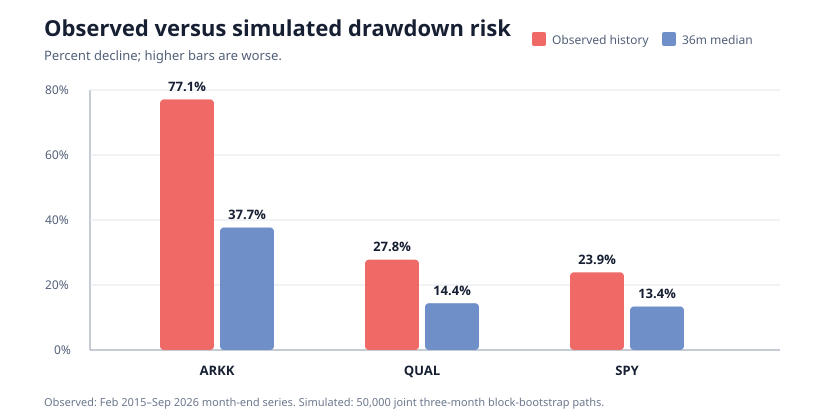

Historical ETF proxy extension
50,000 joint moving-block-bootstrap paths built from 140 common complete monthly returns, February 2015 through September 2026. Current market snapshot: October 9, 2026. This is conditional resampling of observed history—not a forecast.
Return to the interactive scenario dashboard
Observed and simulated drawdown

Thirty-six-month outcomes
Each arm begins with $500 and receives the month-end equivalent of $100 per week. Cumulative contributed cash is $16,100.
| Proxy | Mean | Median | 5th–95th percentile | P(loss) | Median CAGR | Median / 95th-pctl drawdown | P(beat SPY) |
|---|---|---|---|---|---|---|---|
| ARKK | $21,885 | $20,264 | $11,010–$38,127 | 26.8% | 14.2% | 37.7% / 66.2% | 53.2% |
| QUAL | $19,786 | $19,715 | $15,591–$24,189 | 7.6% | 13.6% | 14.4% / 27.8% | 37.7% |
| SPY | $19,987 | $19,926 | $15,799–$24,409 | 6.5% | 14.3% | 13.4% / 26.8% | — |
What the model says—and does not say
ARKK produced the broadest upside distribution and a 53.2% paired frequency of beating SPY, but that small difference is not evidence of a durable edge. Its historical volatility and drawdown were more than double the benchmark's. QUAL and SPY were highly correlated at 0.98, so the quality proxy added little diversification during this sample.